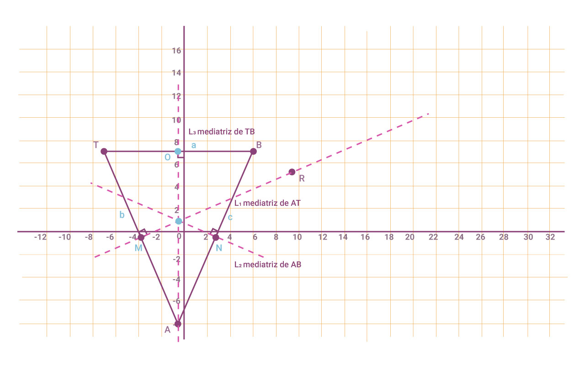
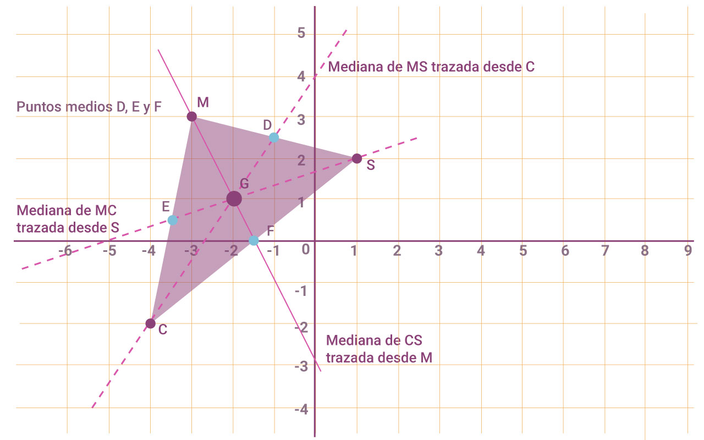
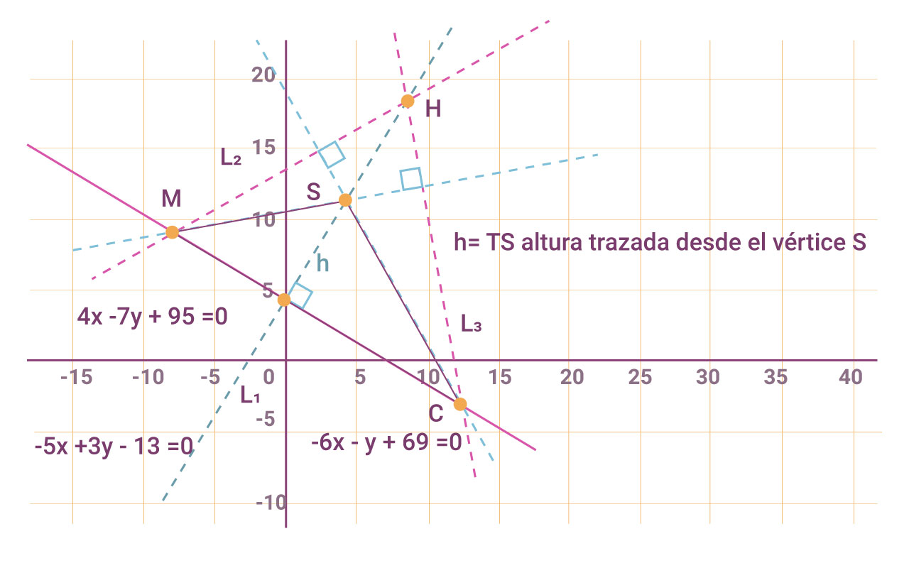

En la siguiente actividad encontraremos las mediatrices, Medianas o Alturas según sea el caso. Para cualquier triángulo.
Encontrar el punto de intersección de las mediatrices (CIRCUNCENTRO) del triángulo cuyos vértices son A(-1, -8), B(6, 7) y T(-7, 7).
Se ha trazado el triángulo y las mediatrices. Figura 4

Figura 4.
A continuación se encontrará el punto de intersección de las mediatrices para ello contestamos lo siguiente.
Segmento de recta que se traza desde un vértice de un triángulo al punto medio de su lado opuesto.
Del lado AT es M( -4 ,-0.5), del lado AB es N( 2.5,-0.5 ) y del lado TB es D (-0.5,7),
Sustituimos la pendiente $m_{l2} = \frac{2}{5}$ y M( -4 ,-0.5) en la ecuación de punto pendiente se tiene que:
$y - y_1 = m(x-x_1)$
$y + \frac{1}{2} = \frac{2}{5}(x+4)$
De manera que si la pasamos a su forma general tenemos que:
$4x-10y+11=0$ Representa la mediatriz de la recta $AT (l_1)$
$7x+15y-10=0$ Mediatriz de AB$(Recta \ l_2)$
$x = - \frac{1}{2}$ Mediatriz TB $(Recta \ l_3)$
$4x - 10y = -11$
$7x + 15y = 10$
$x=- \frac{1}{2}$
Para resolverlo basta solo considerar un par de ecuaciones, por ejemplo (1) y (2), y el punto de intersección es $C(-\frac{1}{2}, \frac{9}{10})$ , trabaja con las ecuaciones (1) y (3) y encuentra otra vez el punto C, apóyate en la figura de arriba.
Otra forma de encontrar la ecuación de la mediatriz es utilizando la definición de que cualquier punto de la mediatriz equidista de los extremos del segmento dado. Como un caso particular en la situación anterior el punto $C(-\frac{1}{2} , \frac{9}{10})$ está en la mediatriz por lo tanto cumple $d_{CT} = d_{CT}$ verifícalo.
Por lo tanto las coordenadas del Circuncentro se encuentra en $C(-\frac{1}{2} , \frac{9}{10})$
Encontrar el punto de intersección de las medianas (Baricentro) del triángulo cuyos vértices son S(1, 2), M(-3, 3) y C(- 4, - 2).
Se ha trazado el triángulo con las medianas y su punto de intersección. Figura 5

Figura 5.
La mediana al lado MC:
Las coordenadas del punto E medio del lado MC son $E(- \frac{7}{2} , \frac{1}{2}) $
La ecuación de la mediana que pasa por los puntos S(1, 2) y E(-72,12) $E(- \frac{7}{2} , \frac{1}{2}) $ Es:
$$y = \frac{1}{3}x + \frac{5}{3} $$
La mediana al lado SM: Las coordenadas del punto D medio del lado MS
son $D(-1, \frac{5}{2})$
La ecuación de la mediana que pasa por los puntos C(-4, -2) y $D(-1, \frac{5}{2})$ Es:
$$y = \frac{3}{2} x + 4 $$
Por lo tanto, el punto de intersección, G, de las de las dos medianas anteriores es G(-2, 1), verifícalo resolviendo el sistema
Pasando la ecuación a la forma $Ax + By + C = 0$
$$-x +3y = 5 $$
$$-3x + 2x = 8 $$
Resolviendo el sistema de ecuaciones tenemos que x=-2 ; y=1
Esto implica que las coordenadas del Baricentro son el punto G(-2,1)
Encuentra el punto de intersección, H, de las alturas (ORTOCENTRO) trazadas desde los vértices del triángulo a sus lados donde los vértices son M(-8, 9), C(12, -3) y S(4, 11).
Se ha trazado el triángulo con las Alturas y su punto de intersección. Figura 6

Figura 6.
Altura L1 al lado MC
La pendiente del lado MC es $m= - \frac{3}{5}$ y por ser perpendiculares entonces la pendiente de $L_1$ es $m_{l1} = \frac{3}{5} $ , como la altura pasa por S(4, 11), la ecuación es:
$$ -5x + 3y - 13 = 0$$
Altura $L_2$ al lado CS
La pendiente del lado CS es $m = - \frac{7}{4}$ y por ser perpendiculares entonces la
pendiente de $L_2$ es $m= \frac{4}{7}$ , como la altura pasa por M(-8, 9), la ecuación es:
$$4x - 7y + 95 = 0$$
Altura a $L_3$l lado SM
La pendiente del lado CS es $m = - \frac{7}{4}$ y por ser perpendiculares entonces la pendiente de $L_3$ es $m_{l3} = \frac{4}{7} $ , como la altura pasa por C(12, -3), la ecuación es:
$$4x - 7y - 69 = 0 $$
Las coordenadas del punto H de intersección de las alturas se obtienen al resolver el sistema:
$$4x - 7y = -95$$
$$-5x + 3y = 13 $$
Las coordenadas son H (8.43,18.39)
Por lo tanto las coordenadas del ORTOCENTRO es H(8.43,18.39)